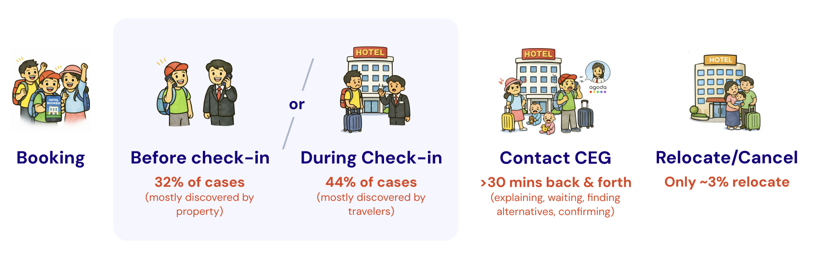
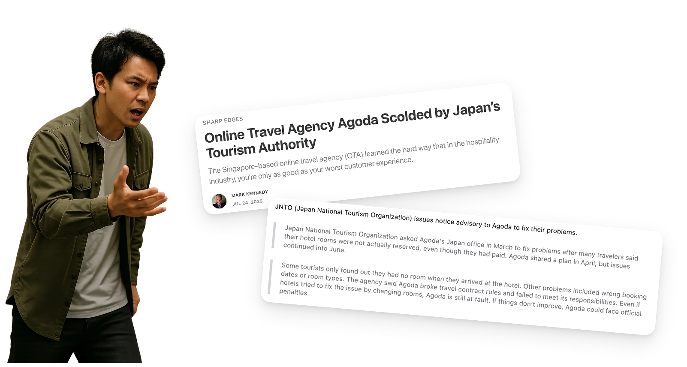
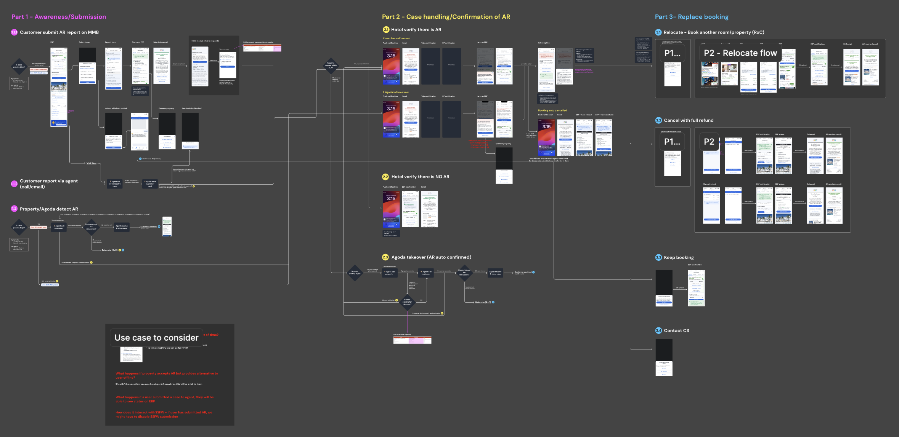
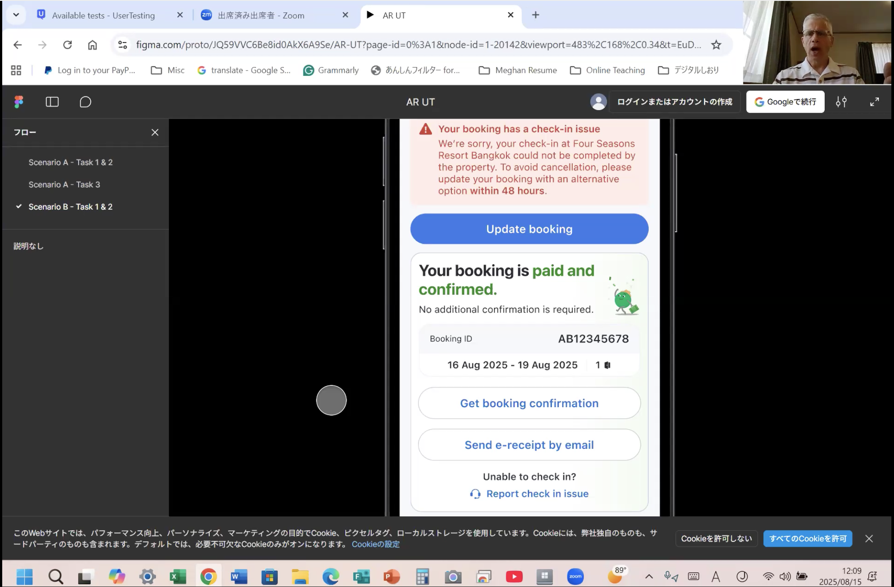
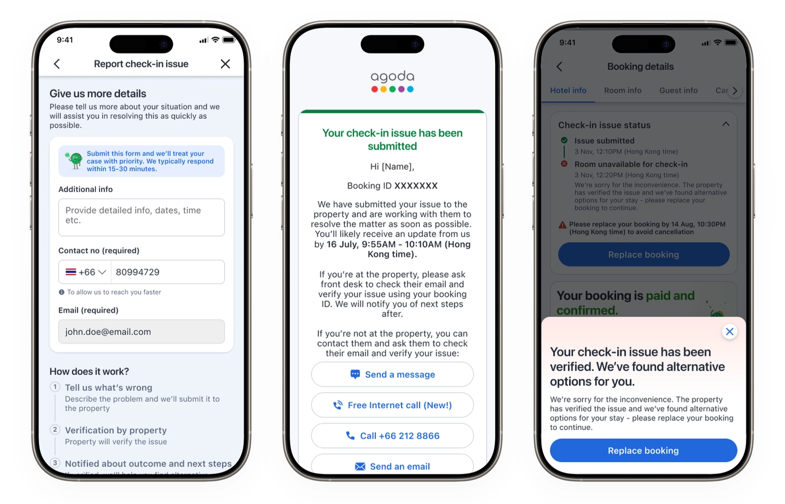

01 / Overview
A confirmed booking doesn’t always guarantee a room.
At Agoda, a growing number of guests arrived at their property only to find that it could not honor a paid and confirmed reservation. Internally, these cases are known as Allotment Rejects.
The goal was to build a self-service flow from scratch—helping guests manage the issue independently, reducing frustration and lowering reliance on customer service.

02 / Why it matters
A high-stress moment for guests—and the second-highest contact cost for the business.
For context, every 1% of customer-service handling time represents approximately US$800,000 in monetary value.
“I asked questions because I was concerned about Agoda reservation issues reported in the news.”— Japan booker

03 / Building the solution
Proving demand before investing in the full flow.
We first placed an entry point on the Manage Booking page to see whether affected guests would use it. Around 50% of guests with an active case clicked the button, validating clear demand for self-service.
I mapped complex operational procedures into one streamlined journey spanning issue reporting, status updates, relocation, and cancellation. The work required alignment on eligibility, urgency and routing logic, plus clear intervention points for handing a case to an agent.
Move the experience from waiting for agent updates to receiving clear, automated system-status updates.

04 / Validating the designs
Testing the complexity with eight Agoda bookers.
All participants completed the flows with confidence and little difficulty. Most were receptive to both the self-service response and the stated resolution time—although family travelers, especially those with young children, needed additional reassurance.
High task completion, confident navigation, and acceptance of the self-service model.
Clearer messaging, more scenario-specific information, stronger information hierarchy, and less ambiguous UI.

Design iteration
From a dense reporting form to a clearer, more reassuring experience.
Repeated booking information and a dense form made the most important guidance harder to scan.
Clearer hierarchy, an explicit response time, autofilled contact details, and a simple explanation of what happens next.
05 / Final MVP
Aligning the ambition with operational reality.
I presented the end-to-end flow to horizontal teams and senior leadership. Because of the operational risks and process changes required, we aligned on a stripped-down MVP that retained the most valuable parts of the experience while creating a practical path to launch.

06 / Results · Early readout
The experience launched safely. The business impact is still being measured.
At the latest readout on 20 September 2026, the experiment had been live for 21 days. Exposure was balanced, but the primary metric remained statistically flat and the hypothesis metrics were not yet conclusive.
Decision
Continue the experiment and collect more evidence before taking a rollout decision. The current data supports neither a confirmed uplift nor a negative impact.
Results reflect an ongoing A/B experiment and may change as more data is collected.